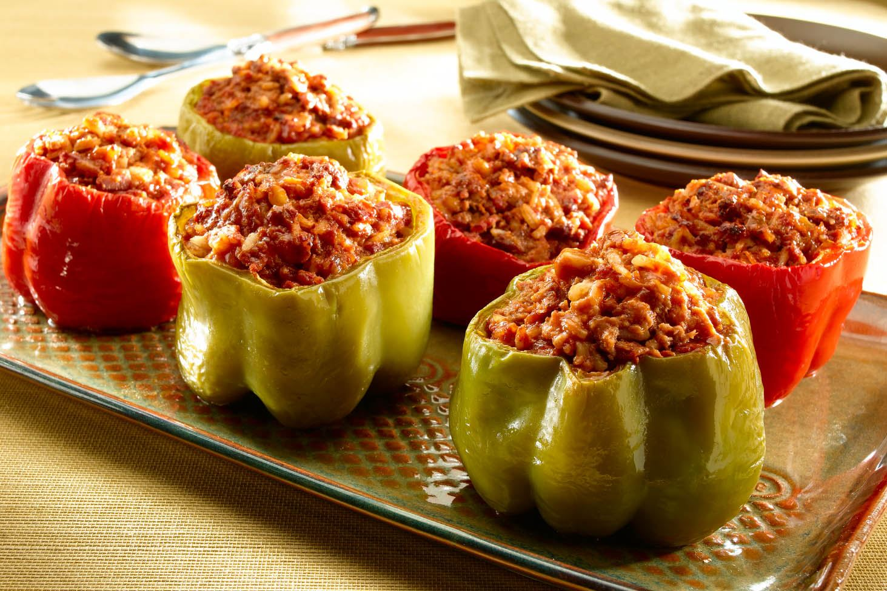

¡Comida sana y facil de preparar!
Publicado el 20 de agosto de 2019
{kind=link}
Los pimientos rellenos al horno son una alternativa de los pimientos rellenos convencionales. En este caso, estarán rellenos de arroz, de carne picada y de alguna verdura y después están asados. Se le puede añadir algo de azafrán, que podrá un toque extra de sabor y color al arroz. O simplemente de tomate. Son muy fáciles de hacer y en cuestión de una hora, estarán servidos en la mesa.

Facil de preparar y muy bueno para disfrutar con la familia
¡Me gustan las recetas casera de esta pagina!
Disfruta un delicioso postre
Publicado el 25 de agosto de 2019
{kind=link}
El arroz con leche es el postre por antonomasia de los hogares de toda España y América latina. Hay recetas más modernas a las cuales se les añade nata, para que quede más cremoso. No obstante, el arroz con leche tradicional ya es un postre bastante cremoso de por sí, por lo cual y según el chef vitoriano, Gorka Barredo, “no es necesario añadirle ningún aditivo que aumente más su cremosidad.

¡Excelente receta!
A mis hijos les encanta
Un rico postre
¡Esta muy buena las receta!